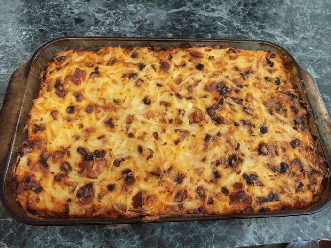

Sausage Casserole

Description
A delicious sausage, egg and cheese casserole, perfect for any occasion. This yummy dish is great for breakfast, lunch, or dinner!
Ingredients
- 1 pound sage-flavored breakfast sausage
- 3 cups shredded potatoes, drained and pressed
- ¼ cup butter, melted
- 1 16-ounce container small curd cottage cheese
- ½ cup onion, shredded
- 6 jumbo eggs
Steps
- Preheat the oven to 375° F (190° C). Lightly grease a 9x13-inch baking dish.
- Heat a large, deep skillet over medium-high heat. Cook sausage in the hot skillet until evenly browned and crumbly, 5 to 7 minutes. Drain and safely disard grease.
- Stir together shredded potatoes and butter in the prepared baking dish; lightly press mixture into the bottom and sides of the dish. Mix together sausage, cottage cheese, cheddar cheese, onion, and eggs in a bow. Pour over potato mixture.
- Bake in the preheated oven until a toothpick inserted into the center of the casserole comes out clean, about 1 hour. Let cool for 5 minutes before serving.
Click here to return to the Recipe page